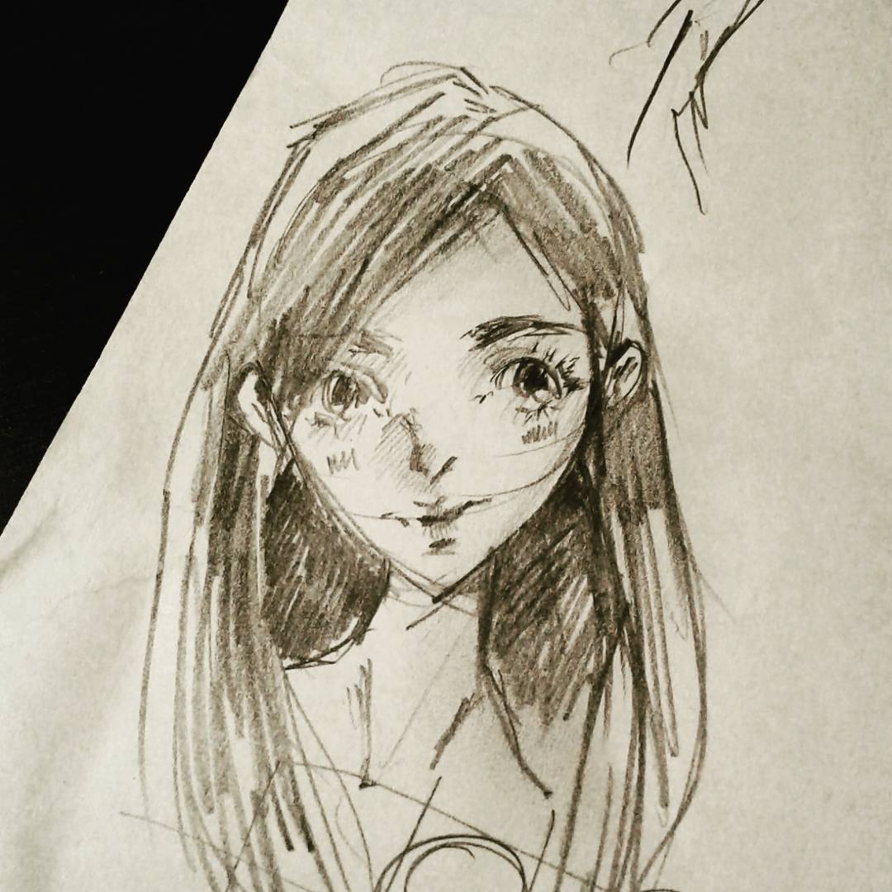
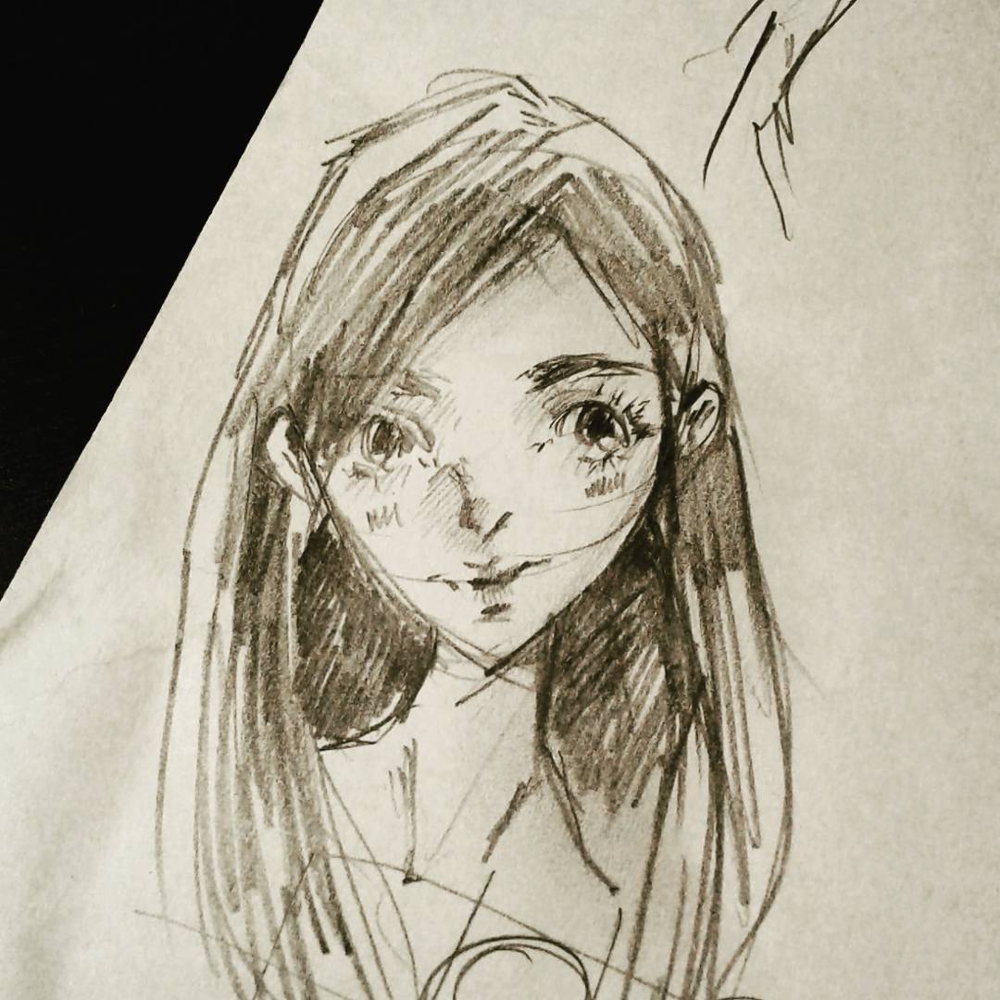

Research

Serious Games for NP-hard Problems
N-way matching is the process of combining multiple software models into one. The problem has pratical importance in software engineering, yet computing it's optimal solution is NP-hard. Matchmakers is a game that empowers the crowd to solve n-way matching.
Presence in Virtual Environments
N-way matching is the process of combining multiple software models into one. The problem has pratical importance in software engineering, yet computing it's optimal solution is NP-hard. Matchmakers is a game that empowers the crowd to solve n-way matching.

Color Analysis in 19th Century English Novels
N-way matching is the process of combining multiple software models into one. The problem has pratical importance in software engineering, yet computing it's optimal solution is NP-hard. Matchmakers is a game that empowers the crowd to solve n-way matching.
Exploring Drug Networks
N-way matching is the process of combining multiple software models into one. The problem has pratical importance in software engineering, yet computing it's optimal solution is NP-hard. Matchmakers is a game that empowers the crowd to solve n-way matching.


 
